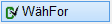")
")
Alternativer Aufruf: Mittlere Maustaste auf Staffellinie
1.Form wählen
Führen Sie einen der folgenden Schritte aus:
a)Wählen Sie Vkn an, wenn Sie die Verlegung mit einer anderen Verlegung mit derselben Form verknüpfen wollen. Klicken Sie die Verlegung an. [Welche Verlegung].
Siehe auch: Verlegungen verknüpfen
b)Wählen Sie Vkn aus, wenn Sie die Form nicht verknüpfen wollen. [Welche Form].
Um die Verlegeform zu wechseln oder die Form mit einem anderen Durchmesser zu verlegen, schalten Sie den Verknüpfungsmodus aus: .
§Klicken Sie ein Element der Auszugsform an. Sie können auch die Texte anklicken. Für die Verlegung steht dann nur die Information der Positionsnummer und der Durchmesser (wenn schon verlegt) zur Verfügung.
-Wenn Sie eine Verlegung oder Positionierung anklicken, steht neben der Positionsnummer auch der Durchmesser, die Anzahl bzw. der Abstand als auch die Tiefe zur Verfügung.
-Sie können die Positionsnummer auch direkt in die Eingabe eingeben. Bestätigen Sie mit der Eingabetaste.
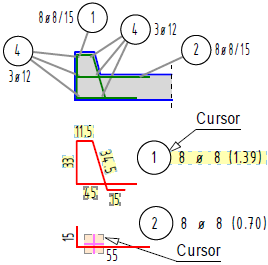 |
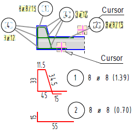 |
Klicken Sie in die gelb hinterlegten Felder oder eine beliebige Linie der Auszugsform an. |
Klicken Sie in die gelb hinterlegten Bereiche oder eine Linie der Verlegung bzw. der Positionierung an. |
§Setzen Sie die Auszugsform per Mausklick an einer beliebigen Stelle in der Zeichnung ab. [Form setzen].
Wenn Sie eine „3D-Form“ gewählt haben [Formst | BiForm | ForTyp → 17 … 21]:
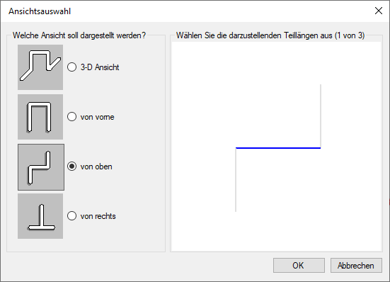 |
Je nach gewählter Form können Sie im Dialog entweder die 3D-Ansicht oder eine der anderen angebotenen Ansichten wählen. Klicken Sie in der Vorschau die Teillängen an, die in der Verlegung dargestellt oder nicht dargestellt werden sollen. Nicht dargestellte Teillängen werden in der Farbe für Elemente im Hintergrund angezeigt; [Option | SysDat | Farbeinstellungen | Konstruktionsprogramm]. 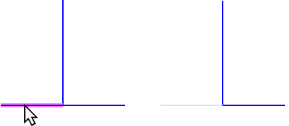 Bestätigen Sie die Auswahl mit OK. ISBCAD speichert die Auswahl für zukünftige Verlegungen. Die Angabe der Teillängen (Schritt 2) und des Projektionswinkels (Schritt 3) wird übersprungen. |
2.Teillängen wählen
Abhängig von der gewählten Biegeform. Gegebenenfalls wird die Abfrage übersprungen.
§Wählen Sie unter Teillänge(n), welche Teillängen dargestellt werden sollen:
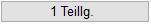 |
Darstellung einer Teillänge. §Klicken Sie die Teillänge an, die in der Verlegung dargestellt werden soll. |
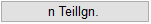 |
Darstellung mehrerer Teillängen. §Klicken Sie die Teillängen an, die dargestellt werden sollen, und bestätigen Sie die Auswahl durch Rechtsklick. |
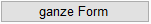 |
Darstellung aller Teillängen. Eingabe: 0 (voreingestellt); stellt die ganze Form mit allen Teillängen dar. |
3.Projektionswinkel und Duplizierrichtung angeben
Projektion der wahren Teillänge(n) im angegebenen Winkel.
§Geben Sie unter Projekt.Wi den Winkel für die Projektion der wahren Teillänge(n), bezogen auf die Horizontale, an.

|
||||||


Nach dem Anklicken der schrägen Teillänge wird diese in der ursprünglichen Neigung abgebildet. Danach wird auf die 90° Ebene projiziert.
Beispiel: Projektionswinkel 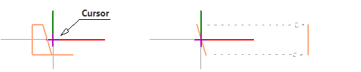 |
Die zugehörigen Abbildungen in der Übersicht werden den gewählten Parametern angepasst.
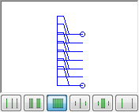 |
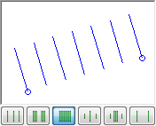 |
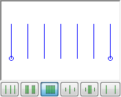 |
§Geben Sie unter Dupl.-Ri die Duplizierrichtung (Winkel zur Horizontalen) an oder bestätigen Sie den Vorschlagswert mit der Eingabetaste oder Rechtsklick.
–Die Duplizierrichtung wird immer senkrecht zur Teillänge vorgeschlagen.
–Die Duplizierrichtung gibt die Verbindung zwischen dem ersten und letzten Stab an. Der vorgeschlagene Wert (Projektionswinkel minus 90°) entspricht in der Regel dem gewünschten Ergebnis.
Beispiel: Duplizierrichtung |
||
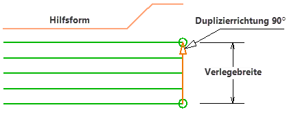 |
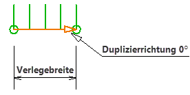 |
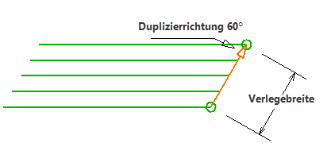 |
Projekt.Wi: 0°, Dupl.-Ri: 90° |
Projekt.Wi: 90°, Dupl.-Ri: 0° |
Projekt.Wi: 0°, Dupl.-Ri: 60° |
|
Tipp: |
|
In der Übersicht wird die Staffel qualitativ so dargestellt, wie sie mit den Parametern [Projekt.Wi] und [Dupl.-Ri] aussehen wird. Nehmen Sie hier nur dann Änderungen vor, wenn die Darstellung nicht Ihren Vorstellungen entspricht. |

Nach Bestätigung des Winkels wechselt ISBCAD automatisch zur Querschnittsangabe. [ø ab/n].
(s. Stahlquerschnitt angeben/ermitteln)